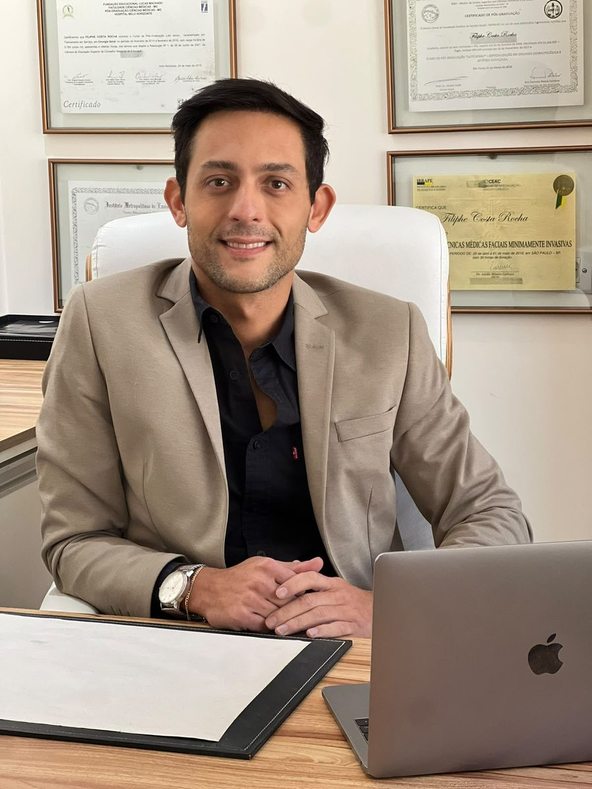

Fimose
O que é fimose e como saber se você tem
Entenda os graus da fimose, os sinais que merecem atenção e quando procurar um médico.
Mais de 10 anos de medicina dedicados a avaliar, orientar e tratar com base em evidências. Atendimento na Vila Mariana, São Paulo.

Atendimento acolhedor para temas que muitos homens adiam. Aqui, cada avaliação é individual e orientada por diretrizes médicas atuais.
Avaliação do grau, orientação sobre as opções de tratamento e acompanhamento — do diagnóstico à recuperação.
Saiba mais →Cuidado com função sexual, saúde reprodutiva, hormônios e performance — sem julgamento, com base científica.
Ver conteúdos →Investigação das causas e orientação de tratamento para recuperar a saúde sexual, com discrição e base em evidências.
Falar sobre →Método definitivo de contracepção masculina, com orientação clara sobre o procedimento, recuperação e cuidados.
Falar sobre →Preenchimento com ácido hialurônico e avaliação de opções, sempre com informação honesta e expectativa alinhada.
Entenda →Formação em cirurgia geral pelo Hospital Belo Horizonte e pós-graduação em cirurgia estética avançada.
Ver formação →Formação em medicina legal e perícia médica pela USP, com atuação como médico perito.
Saiba mais →Mineiro de sangue, paulistano de coração. Médico há mais de 10 anos, com uma prática construída sobre estudo constante, seriedade e envolvimento real com cada paciente que confia no seu trabalho.
A medicina que ele pratica é baseada em evidências científicas e nas diretrizes das sociedades médicas nacionais e internacionais mais respeitadas — com foco em tratamentos seguros, éticos e eficazes.
Fale direto com a secretaria para escolher o melhor horário. Rápido, discreto e sem burocracia.
Consulta com história clínica e exame. Cada caso é único e recebe uma conduta específica.
Orientação clara sobre as opções e acompanhamento próximo em cada etapa do cuidado.
Artigos semanais para tirar dúvidas e combater a desinformação sobre o corpo masculino.
Entenda os graus da fimose, os sinais que merecem atenção e quando procurar um médico.
Tabu, medo e desinformação afastam os homens do cuidado. Vamos falar sobre isso sem rodeios.
Um guia prático sobre exames e cuidados de rotina em cada fase da vida do homem.
O Dr. Filiphe responde as perguntas que os homens mais têm — de forma direta e didática. Acompanhe.
"Atendimento discreto, acolhedor e muito técnico. Explicou as causas, solicitou os exames e indicou o tratamento adequado ao meu caso. Recomendo para quem busca um urologista de confiança."
"O Dr é simplesmente maravilhoso, meu pai é paciente e já indicamos outros. Fez cirurgia de fimose com ele, excelente pós-cirúrgico e atenção excepcional."
"Atendimento excelente. Médico excepcional, muito humano e interessado em te ajudar a solucionar o seu problema, muito atencioso e profissional. Super recomendo."
"Só tenho elogios pela competência e forma como conduz, tanto no momento cirúrgico como no pós-cirurgia. Muito competente, recomendo!"
"O Dr. Filiphe é um cirurgião maravilhoso, atencioso, muito educado, preocupado com o paciente e um grande profissional nas áreas em que atua. Recomendo pra todos."
"No começo estava com medo, porém foi a melhor coisa que fiz, tanto pra saúde quanto pra higiene. O Dr. fez ótimo trabalho e não deixou na mão, recuperação excelente."
Marque uma avaliação e tire suas dúvidas com quem cuida da saúde do homem com seriedade e discrição.
Falar no WhatsApp agoraRua Azevedo Macedo, 20 — Ed. Nova Paulista Plaza, conj. 121
Vila Mariana, São Paulo/SP — 04013-060